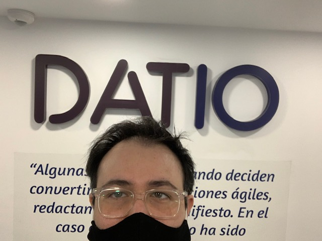

Work
Even though I am working as an elementary school teacher right now, my last IT-related job was at Datio. Datio is a Big Data start-up that was created by the Spanish bank BBVA and Stratio. I started working as Platform support. We worked with DC/OS for the use of Data as a Service (DaaS) in Spain, Mexico, the US, Colombia, Argentina, and Peru regarding the creation and management of service and nominal accounts, new Sandboxes on development and live environments (HDFS), data ingestion and extraction of data with Agile framework.
After a year I got promoted to Quality Assurance Specialist. This role had three primary responsibilities. The first one was making the required upgrades to the platform alongside the deployment team. These changes kept the platform optimized and running jobs as efficiently as possible. The second responsibility was making sure three teams of developers complied with the required quality standards by validating their Scala and Python pull requests and aiding them with their questions. If a learning opportunity was discovered, courses provided by Datio were scheduled. The third responsibility was to provide help during platform interventions, which could be off-hours, to validate the correct functionality of the changed piece.
If you want to learn more about Datio, make sure you visit their webapage by clicking on the image below. Please note it is in Spanish.
Some years before working at Datio, I also worked for a company called “CompuCom”. I spent six years with them, three of them as Team Manager which was the role that I enjoyed the most. Below is a table with the contracts I worked on, as well as the year and where they were located.
| Company | Location | Year |
|---|---|---|
| Winn Dixie | Florida | 2006 |
| Giant Eagle | Pittsburgh | 2007 |
| Levis | California | 2008 |
| First Group America | Cincinnati | 2009 |
| Suncor | Canada | 2010 |